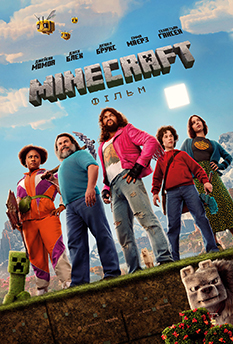

Вікові обмеження: 12+
Рік: 2025
Оригінальна назва: A Minecraft Movie
Режисер: Джаред Гесс («Наполеон Динаміт»)
Рейтинг глядачів: 6
Рейтинг критиків: 47%
Мова: українська мова
Жанр: Пригоди, Екшн, Сімейний
Тривалість: 1:41
Виробництво: США
Студія: Warner Bros. Pictures, Legendary Pictures, Vertigo Entertainment
Сценарій: Джаред Гесс
Опис:
Ласкаво просимо до світу Minecraft! Творчість тут допомагає не лише майструвати, а й необхідна для існування! Ґаррет «Сміттяр»
Ґаррісон, Генрі, Наталі та Дон – це четверо невдах, які вирішують свої буденні проблеми.
Та одного дня, пройшовши таємничий портал, вони потрапляють у Верхній світ – химерну кубічну країну чудес, яка процвітає
завдяки уяві. Щоб повернутися додому, їм доведеться пізнати цей світ (і захистити його від злих істот, таких як Піґліни та
Зомбі). Для цього герої вирушать у магічний квест з новим знайомим, досвідченим майстром Стівом. Спільна пригода випробує
усіх п'ятьох на сміливість та подарує можливість віднайти унікальні навички, які роблять кожного з них неповторним
творцем... саме ті навички, які їм потрібні для успіху в реальному світі.